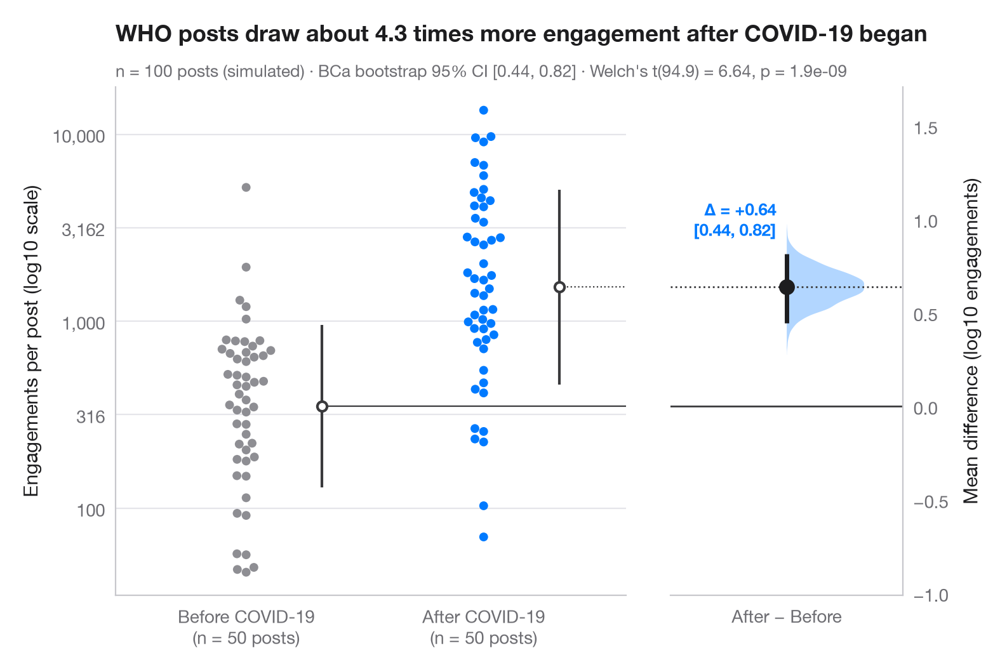

估计图
两组原始数据，加上均值差及其自助法 95% 置信区间。

Gardner–Altman 估计图将效应量而非 p 值置于核心位置。左轴展示两组的全部观测值；右侧的浮动坐标轴经过对齐，使其零点正好位于对照组均值处。在这条轴上，均值差的自助法分布以半边小提琴图呈现，点估计及其 95% 置信区间分别以圆点和线段表示。
数据为模拟数据：40 名患者服用安慰剂，40 名服用新药，结局为八周后收缩压的下降值。95% 置信区间为 scipy.stats.bootstrap 计算的偏差校正加速（BCa）自助法区间；每组蜂群图旁的竖线表示组均值 ± 1 SD，蜂群图由 seaborn.swarmplot 绘制。
代码及图中文字均为英文。
import matplotlib.pyplot as plt
import numpy as np
import pandas as pd
import seaborn as sns
from scipy import stats
# Simulated trial: reduction in systolic blood pressure (mmHg)
rng = np.random.default_rng(2024)
control = rng.normal(4, 7, 40)
drug = rng.normal(10, 7.5, 40)
df = pd.DataFrame({"group": ["Placebo"] * 40 + ["Drug"] * 40, "drop": np.r_[control, drug]})
# Mean difference with a BCa bootstrap 95% CI, and the bootstrap distribution
diff = lambda a, b, axis=-1: np.mean(b, axis=axis) - np.mean(a, axis=axis)
boot = stats.bootstrap((control, drug), diff, n_resamples=5000, method="BCa",
random_state=np.random.default_rng(1))
lo, hi = boot.confidence_interval
delta = drug.mean() - control.mean()
t = stats.ttest_ind(drug, control, equal_var=False)
# Manual layout (the long subtitle would otherwise squeeze the panels apart)
fig, (ax, ax2) = plt.subplots(1, 2, figsize=(8, 5.2), width_ratios=[2.2, 1], layout="none")
fig.subplots_adjust(wspace=0.12)
palette = ["#8E8E93", "#007AFF"]
sns.swarmplot(data=df, x="group", y="drop", hue="group", palette=palette, size=5,
legend=False, ax=ax)
for i, d in enumerate([control, drug]): # mean ± SD as a gapped line beside the swarm
m, s = d.mean(), d.std(ddof=1)
ax.vlines(i + 0.32, m - s, m + s, color="#3A3A3C", lw=1.5)
ax.scatter(i + 0.32, m, s=30, color="white", edgecolor="#3A3A3C", lw=1.5, zorder=3)
ax.set_xlabel("")
ax.set_ylabel("Drop in systolic blood pressure (mmHg)")
ax.set_xticks([0, 1], [f"Placebo\n(n = {len(control)})", f"Drug\n(n = {len(drug)})"])
# Floating difference axis: zero aligned with the control mean
ax.set_xlim(-0.55, 1.6)
ymin, ymax = ax.get_ylim()
ax2.set_ylim(ymin - control.mean(), ymax - control.mean())
ax2.axhline(0, color="#3A3A3C", lw=1)
ax2.axhline(delta, color="#3A3A3C", lw=1, ls=":")
ax.plot([0.32, 1.6], [control.mean()] * 2, color="#3A3A3C", lw=0.8)
ax.plot([1.32, 1.6], [drug.mean()] * 2, color="#3A3A3C", lw=0.8, ls=":")
v = ax2.violinplot(boot.bootstrap_distribution, positions=[0], widths=0.8,
showextrema=False, side="high")
v["bodies"][0].set(facecolor="#007AFF", alpha=0.3, edgecolor="none")
ax2.vlines(0, lo, hi, color="#1D1D1F", lw=2.5)
ax2.scatter(0, delta, s=70, color="#1D1D1F", zorder=3)
ax2.annotate(f"Δ = {delta:+.1f}\n[{lo:.1f}, {hi:.1f}]", (0, hi), xytext=(-6, 8),
textcoords="offset points", ha="right", va="bottom", fontsize=9.5,
fontweight="semibold", color="#007AFF")
ax2.set_xlim(-0.6, 0.6)
ax2.set_xticks([0], ["Drug − Placebo"])
ax2.yaxis.tick_right(); ax2.yaxis.set_label_position("right")
ax2.spines[["left"]].set_visible(False); ax2.spines["right"].set_visible(True)
ax2.set_ylabel("Mean difference (mmHg)")
ax2.grid(False)
ax.set_title("The drug lowers blood pressure by about 6 mmHg more than placebo", pad=26)
ax.text(0, 1.02, f"Mean difference {delta:.1f} mmHg, BCa bootstrap 95% CI [{lo:.1f}, {hi:.1f}]"
f" (5,000 resamples) · Welch's t({t.df:.1f}) = {t.statistic:.2f}, p = {t.pvalue:.1e}",
transform=ax.transAxes, fontsize=9.5, color="#6E6E73")
plt.show()
图表使用了可选的 PyStatlas 样式：添加 plt.style.use("pystatlas.mplstyle") 即可完全还原其外观。
如何引用
PyStatlas 由 Thierry Warin 创建并维护。如果它对你的工作有所帮助，敬请引用。
Warin, T. (2026). Estimation plot. In PyStatlas: The Python Gallery of Statistical Graphics. https://warint.github.io/pystatlas/group-comparisons/estimation-plot/
@misc{warin2026statlas,
author = {Warin, Thierry},
title = {PyStatlas: The Python Gallery of Statistical Graphics},
year = {2026},
howpublished = {\url{https://warint.github.io/pystatlas/}},
note = {Source code: https://github.com/warint/pystatlas}
}